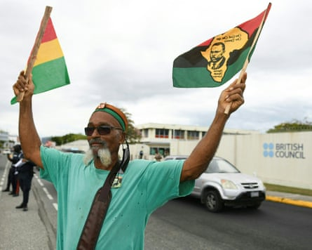

Caribbean leaders are backing Jamaica’s petition to King Charles on reparations as the region prepares to step up its pursuit of reparative justice for slavery, the prime minister, Andrew Holness, has said.
Speaking at this week’s leaders summit for the Caribbean Community (Caricom), a bloc of 20 member and associate member states, Holness said Jamaica had secured “broad support” from the region for its petition to the king, the island’s head of state.
The petition asks Charles to use his authority to request legal advice from the judicial committee of the London-based privy council, the final court of appeal for UK overseas territories and some Commonwealth countries, on whether the forced transport of Africans to Jamaica was lawful, if it constituted a crime against humanity, and whether Britain was under obligation to provide a remedy to Jamaica for slavery and its enduring consequences.
During the centuries-long transatlantic slave trade more than 12.5 million Africans were kidnapped and forcibly transported to the Americas , including Jamaica, where they were sold into slavery.
A demonstrator in Kingston, Jamaica, calls for slavery reparations, outside the British high commission in 2022.Photograph: Ricardo Makyn/AFP/Getty Images
Holness, acknowledging the Jamaican MP Mike Henry, who brought the resolution, which has now been passed in parliament and affirmed by the country’s cabinet, said the petition was a bold step towards justice. It was a “watershed moment for Caricom and the broader global movement for reparatory justice”, he added.
He said that if the petition was successful, “the United Kingdom bears a legal obligation to provide reparations to Jamaica and its people for the enduring harm caused”.
Jamaica’s culture minister, Olivia “Babsy” Grange, who announced the petition in June, told the Guardian it was “going to have a far-reaching impact on our efforts in the region to seek reparation”.
She emphasised that countries were working together: “Various countries will be making a determination what action they take. But the bottom line is that they are all onboard in support of the position we have taken. That, to me, is the big statement – we’re working together in this effort,” she said.
Other leaders reiterated their commitment, with the prime minister of St Vincent and the Grenadines , Ralph Gonsalves, one of the founding members of the Caricom reparations movement, saying: “We are not giving up the reparations fight.”
“In the Caribbean [we] have a specific primary concern, primary responsibility to address reparations for native genocide and the enslavement of Africans,” he said, adding that the region needed allies. He said the issue would be on the agenda at the Africa-Caricom summit, scheduled for September in Ethiopia.
The prime minister of Antigua and Barbuda , Gaston Browne, emphasised that it was a matter of justice for those who were exploited and were not paid for their labour.
“We must be able to fight for justice because not only were our forebearers exploited in terms of not being paid, but the profits that were generated were repatriated to Europe and to North America to build out their economies, and they left our countries bereft of important social institutions, hospitals, schools, and they also did not develop the infrastructure within our countries,” he said.
The premier of the British Virgin Islaands, Natalio Wheatley, congratulated Caricom and Jamaica for pressing the issue in the face of opposition in the UK. “Some persons would just prefer not to listen to it. And sometimes when you hear about some of the persons in the United Kingdom, some of the journalists, etc, who almost ridicule the whole concept of reparations, and ridicule those who bring those arguments, you see really what we’re up against, but we appreciate the leadership.”